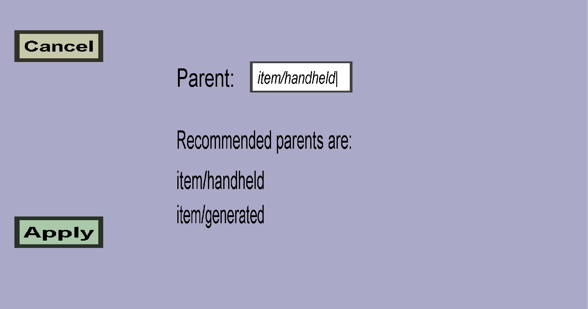

As the name suggests, the choose default model menu can be used to choose a default item model for a custom item. This menu should look like this:
In the text edit field, you can choose the parent for the default model. The recommended parents are shown below the text field. The recommendation(s) depend on what kind of custom item you are making. In this example, it is for a simple custom item, for which the recommend parents are: